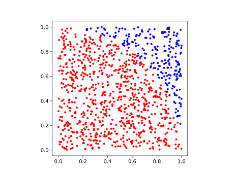
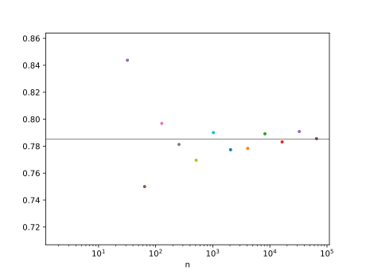

第5回：■ 条件式・■ 条件分岐
■ 論理演算
否定
!論理積
&&論理和
||
■ 数の大小比較
演算子==は、a == bのように用いて、値が等しいか否か判定する。 演算子!=は、値が異なるか否か判定する。 成立すれば(真ならば) trueが、 成立しなければ(偽ならば) false が結果となる。
julia> 1 == 1
true
julia> 1 == 2
false
julia> 1 != 1
false
julia> 1 != 2
true演算子>は、a > b のように用いて、aの値がbの値よりも大きいか否か。 演算子>=は、a >= b のように用いて、aの値がbの値以上であるか否か判定する。
julia> 2 > 1
true
julia> 2 >= 1
true
julia> 2 >= 2
true演算子<は、a < b のように用いて、aの値がbの値よりも小さいか否か。 演算子>=は、a <= b のように用いて、aの値がbの値以下であるか否か判定する。
julia> 2 < 1
false
julia> 2 <= 1
false
julia> 2 <= 2
true数の比較演算子は、連続して記述できる。
julia> 1 < 2 < 3
true
julia> 1 < 2 && 2 < 3
truea>b, >(a,b)
■ if文
if文は、条件式をとる。 条件式の値が true なら、if文の次の文から、end, else, elseif が出現するまでの文を実行する。 条件が成り立つときだけに実行される部分をブロック(block)という。 ブロックは、字下げで表記される。
julia> x=1
1
julia> y=2
2
julia> if x < y
println("x は y より小さい")
end
x は y より小さいelse文が続く場合がある。 条件式の値が false なら、else文の次の文から、end が出現するまでの文 (elseブロック)を実行する。
julia> x=1
1
julia> y=2
2
julia> if x < y
println("x は y より小さい")
else
println("x は y より小さくない")
end
x は y より小さいelse文の前に、elseif文文が続く場合がある。 最初の if文の条件式が false なら、 elseif文の条件式を計算し、それが true なら、elseif 文の次の文から、elseifまたはend が出現するまでの文 (elseifブロック)を実行する。
julia> x=1
1
julia> y=2
2
julia> if x < y
println("x は y より小さい")
elseif x > y
println("x は y より大きい")
else
println("x は y と等しい")
end
x は y より小さいjulia> x=40
40
julia> m=if x >= 100
println("x は 100 以上である")
elseif x >= 50
println("x は 50 以上である")
elseif x >= 20
println("x は 20 以上である")
else
println("x は 20 よりも小さい")
end
x は 20 以上である
julia> @show m
m = nothing■ if式
julia> x=40
40
julia> m=if x >= 100
"x は 100 以上である"
elseif x >= 50
"x は 50 以上である"
elseif x >= 20
"x は 20 以上である"
else
"x は 20 よりも小さい"
end
"x は 20 以上である"
julia> @show m
m = "x は 20 以上である"
"x は 20 以上である"■ 3項演算子
a ? b : c
julia> m= 2 > 1 ? "yes" : "no"
"yes"
julia> @show m
m = "yes"
"yes"■ 短絡評価
▶︎ 擬似乱数
rand() 0から1未満の小数の乱数を出す擬似乱数
julia> rand()
0.752171919402927
julia> rand()
0.8849042251609318
julia> rand()
0.23636985464723836rand( コレクション ) とすると、コレクションのうち、 一つの要素を選ぶ擬似乱数。
▶︎ モンテカルロ法
第一象限 $x \ge 0, y \ge 0$ $x^2+y^2 \lt 1$
半円の面積 $\frac{\pi}{4}$
using PyPlot
n=2^10
for i=1:n
x=rand()
y=rand()
c = x*x + y*y <= 1 ? "r" : "b"
plot(x,y,".", color=c)
end
plt[:axes]()[:set_aspect]("equal")
n=2^10
s=0
for i=1:n
x=rand()
y=rand()
if x*x + y*y <= 1
s += 1
end
ends / n = 0.7734375using PyPlot
for m in 1:14
n=2^m
s=0
for i=1:n
x=rand()
y=rand()
if x*x + y*y <= 1
s += 1
end
end
plot(n, s/n, ".")
end
ylim(0.9*pi/4, 1.1*pi/4)
xscale("log")
axhline(pi/4, color="k", lw=0.5)